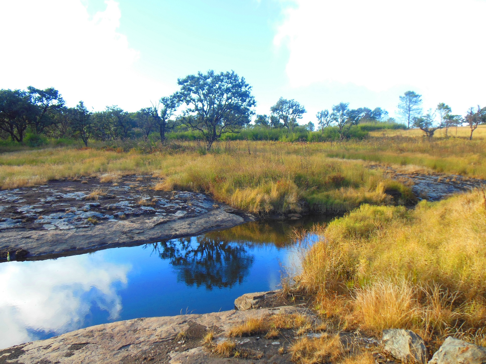
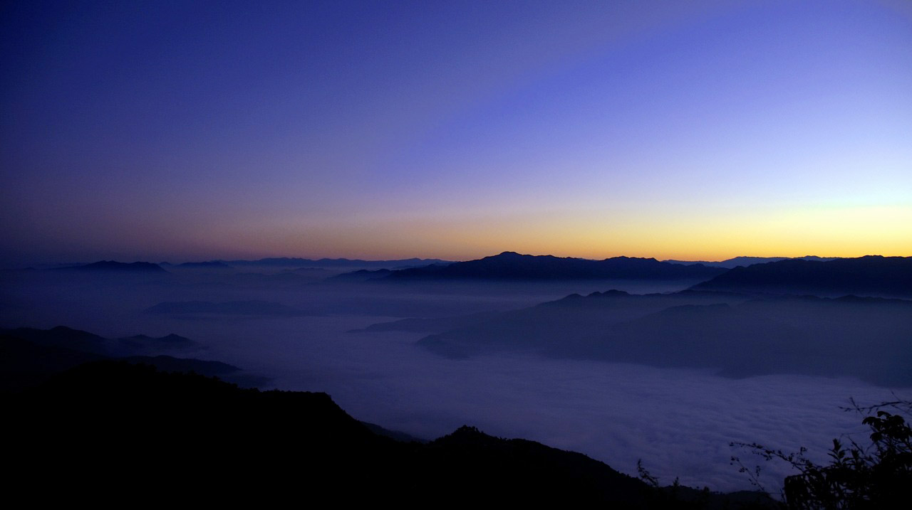
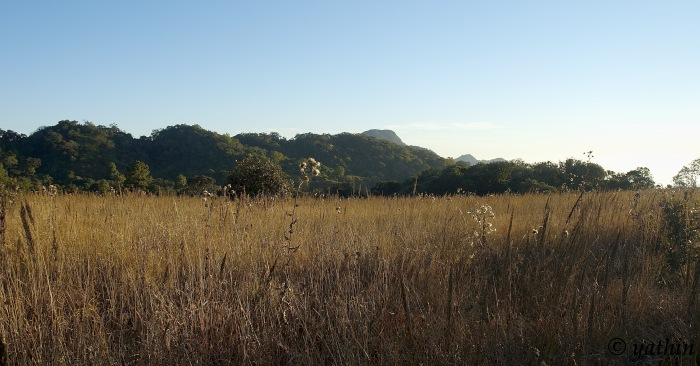
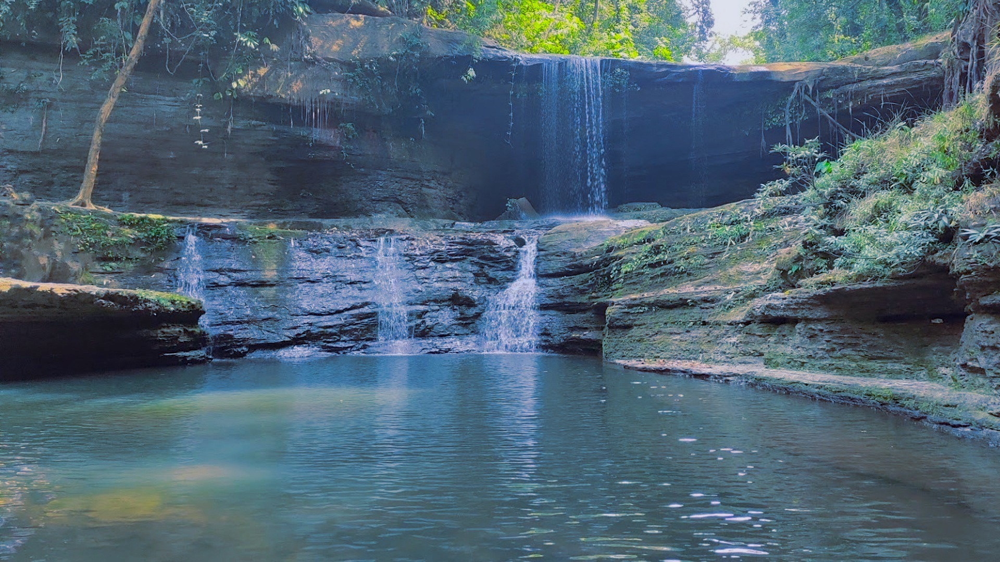
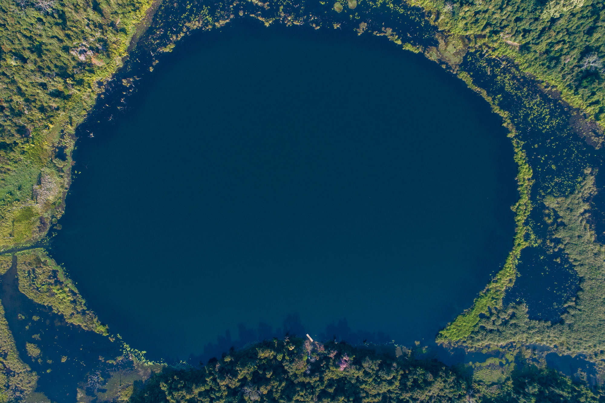
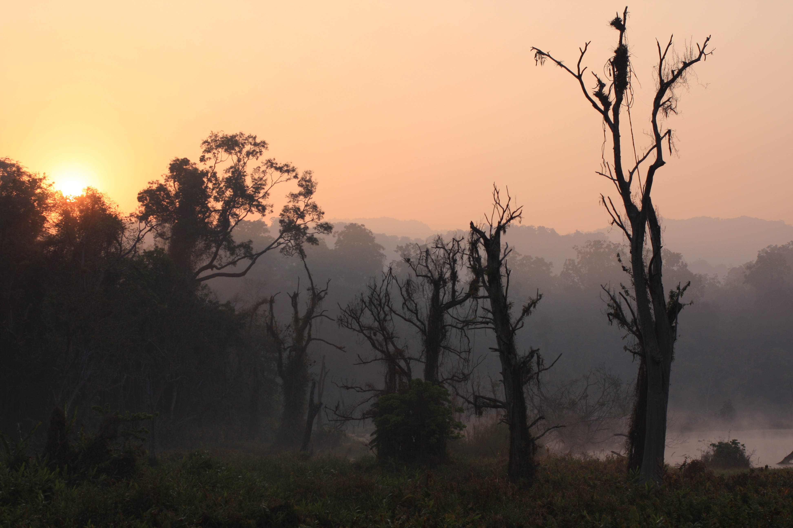
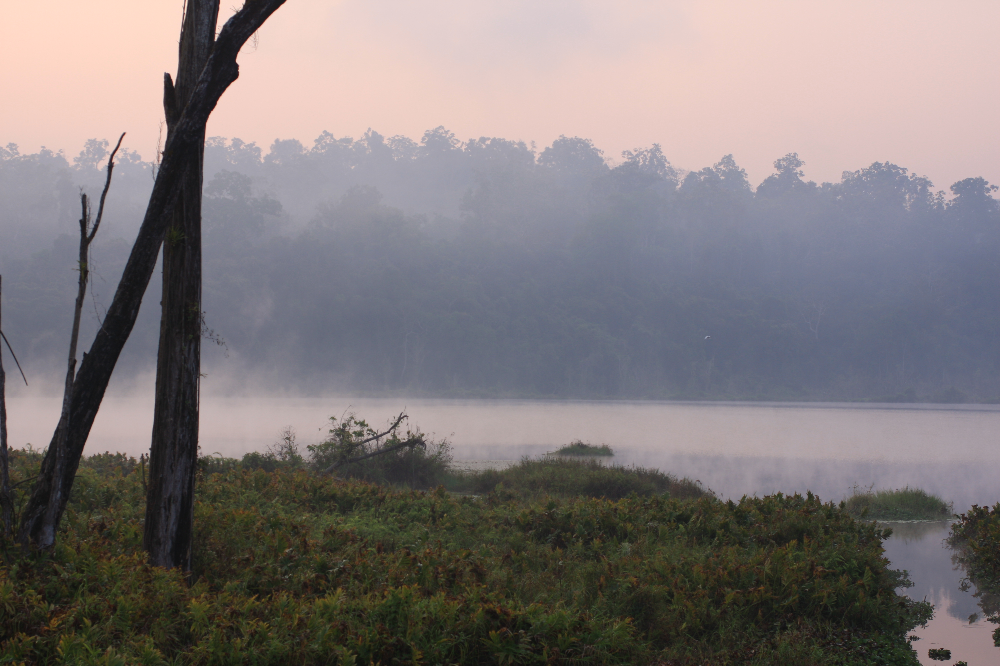

"Mizoram — 'Land of the Highlanders' — is a peaceful, picturesque state of rolling blue mountains, bamboo forests, and a deeply music-loving people with high literacy."
"मिजोरम — 'पहाड़ियों की भूमि' — नीले पहाड़ों, बाँस के जंगलों और संगीत-प्रेमी लोगों का एक शांत, सुरम्य राज्य है।"
PLACES TO VISIT / घूमने के स्थान




PHAWNGPUI NATIONAL PARK
फॉंगपुई - नीला पर्वत
The highest peak in Mizoram. Turns blue in evening light, covered in rhododendron forests and rare orchids.
मिजोरम की सबसे ऊँची चोटी। शाम की रोशनी में पर्वत नीला-बैंगनी हो जाता है। यहाँ रोडोडेंड्रोन वन हैं।



VANTAWNG FALLS
वान्तौंग जलप्रपात
Mizoram's highest waterfall, cascading 229 meters through thick bamboo jungle in Serchhip district.
मिजोरम का सबसे ऊँचा जलप्रपात (229 मीटर)। यह घने जंगल के बीच से दो-स्तर में गिरता है।




PALAK LAKE
पालक तालाब
The largest natural lake in Mizoram, surrounded by dense forests. Very remote and peaceful.
मिजोरम की सबसे बड़ी प्राकृतिक झील। बहुत दूरस्थ और शांत, यह प्रवासी पक्षियों का घर है।
FOOD & CUISINE / भोजन
BAMBOO SHOOT PORK
The quintessential Mizo dish. Pork block cooked with fresh or fermented bamboo shoots, generously spiced.
ताजे या किण्वित बाँस के अंकुर को सूअर और मिर्च के साथ पकाया जाता है।
BAI (बाई - Vegetable Stew)
A nutritious staple stew of leafy greens and wild vegetables cooked down with pork fat.
हरी पत्तेदार सब्जियों और सूअर की चर्बी से बना हल्का पोषक स्टू।
SHOPPING / खरीदारी
MIZO PUAN (मिजो पुआन)
Traditional cloth worn as a shawl or wrap-around skirt with bold geometric patterns and vibrant red/black colors.
पारंपरिक मिजो कपड़ा जो शॉल या रैप के रूप में पहना जाता है।
BAMBOO CRAFTS
Intricate baskets, fish traps, and furniture. Mizoram alone has over 30 species of bamboo.
मिजोरम में बाँस की 30+ प्रजातियाँ हैं। उनसे बने बारीक शिल्प और फर्नीचर।